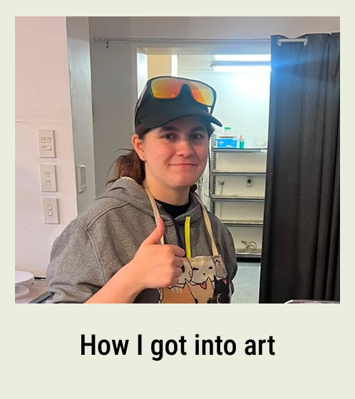
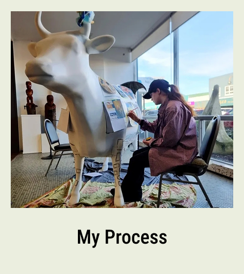

About
Just a little background of how I got into art, my process and other information.
Check out the Gallery!

How I got into Art
Hey Im Shea Weightman. Since a very young age I have been obsessed with art. My family supported me through school for my peruse and they still do, especially my mum. Mum was my gate way to art, as she’s also an artist/ designer. with her skills, knowledge and access to supplies she helped me grow into the artist I am now. Im currently studying at the University of Waikato to gain my bachelor of design (communication design, and interface design.) Studying there is the main reason ive made this site as well. Since me studying here ive had the opportunity to learn how to build sites and grow my painting and designing skills. Because of this I wanted to showcase what im up to as a 18 year old university student. I wouldn't be here if it wasn't for my mum and dad always pushing to improve my art at such a young age. Thank you for checking my page out I really appreciate it and I hope that you like my portfolio of art :3

My Process
Depending on what im working on it always starts the same! Research is the most important step in my process. whether its for designing a poster, painting a massive fanatcy peice or brand desing. I make several thumbnail sketches to get a rough idea of what I thinking, after that i search up the themes, and create mood boards with notes to see what I need to change, what could stay and what I should add to the working piece. After this i create multiple a5 sketches or a6 depending on the amount of idea’s, grabbing the 2 most liked renditions of the idea I fill it out, drawing details i couldn't at the small versions. after this i finally choose the better looking one and sketch it out on the desired paper , one time in a light colour loosely and then again in a darker pencil more refined. finally after all this I paint, always starting with a base cote in one colour that will show through the final painting gradually adding more layers until it looks polished. Now if this was just a painting I would leave it there but if its mixed media I finish it off by drawing shadows, highlights and details with coloured pencils. I uses the same process for designing but in adobe.
Other
One of the main places that I keep going back to for either work or displaying my art is the wallace art gallery. currently I have no work that is being displayed in the exhibitions however the gallery has a fiber glass cow outside which I was specifically asked to paint on. A place that i've been to that helepd has been the Aukland Art gallery. It's always full with weird and wonderfull art and designs that ive taken heavy inspo from.
Find out More about Wallace Art gallery
Find out More about Aukland Art gallery